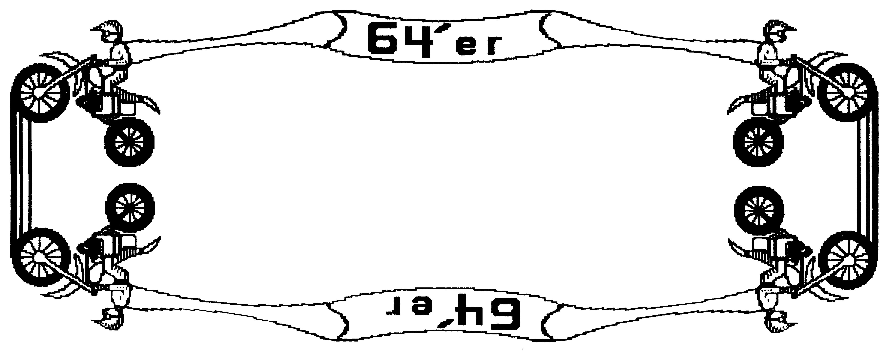

Hi-Spiegel – eine tolle Erweiterung zu Hi-Eddi
Dieses Programm ermöglicht erstmals die problemlose Spiegelung ganzer Grafikseiten und eignet sich ganz hervorragend zur Gestaltung eigener Vordrucke wie Briefköpfe oder Glückwunschkarten.

a i-Eddi aus der 64'er Ausgabe 1/85 ist zwar eines der besten Malprogramme, aber eine Spiegelung von Grafikseiten war bisher nicht möglich. Mit diesem kleinen Zusatzprogramm wird das anders.
Das Maschinenprogramm (Listing 1) belegt den Bereich von COO0 bis C256 und liegt damit im Grafikspeicher 5 von »Hi-Eddi«. Es ist aus diesem Grund nicht ständig im Speicher, sondern wird bei Bedarf ähnlich wie »Hi-Print« von Diskette nachgeladen. Dies ist kein Nachteil, da man es ja nicht ständig benötigt und das Laden nur 5 Sekunden dauert. Außerdem wird »Hi-Exe« nicht überschrieben und braucht daher nach der Spiegelung nicht nachgeladen zu werden. Allerdings werden die oberen Zeilen eines im Grafikspeicher 5 stehenden Bildes durch das Maschinenprogramm überschrieben. Daher sollte dort während der Spiegelung kein Bild gespeichert sein.
Die Spiegelroutine spiegelt stets das Bild im Grafikspeicher 1. Das zu spiegelnde Bild muß also beim Aufruf der Routine in diesem Bildspeicher stehen.
Der Aufruf ist ganz einfach: Immer wenn man die Tastenkombination <Commodore L> zum Laden von Bildern drückt, fragt das Steuerprogramm:
Spiegeln (J/N)
Gibt man <N> ein, folgt das gewohnte Lademenü. Gibt man <J> ein, erscheint die Meldung: 1=RUNTER 2=HOCH 3=RECHTS 4=LINKS
Nach Eingabe der entsprechenden Ziffer wird »Hi-Spiegel« geladen und die Spiegelung durchgeführt. Bei anderen Eingaben wird zwar Hi-Spiegel ebenfalls geladen, aber keine Spiegelung ausgeführt. Nach der Spiegelung wird sofort wieder das aktuelle Bild gezeigt.
Die Spiegelung wird mit dem Befehl <OR> ausgeführt, das heißt, der Inhalt der Bildhälfte, in die gespiegelt wird, wird dabei nicht gelöscht. Man kann dadurch sehr interessante Effekte erzielen. Natürlich kann man die Bildhälfte, in die gespiegelt werden soll, auch vorher mit Hi-Eddi löschen. Man kann auch ein Bild komplett spiegeln. Dazu sind allerdings mehrere Arbeitsgänge nötig:
-
Bild kopieren (Hi-Eddi-Befehl) <ON> – In einem Bild die linke, im anderen die rechte Hälfte löschen
-
Das erste Bild nach Bildspeicher 1 übertragen und nach links spiegeln.
-
Das zweite Bild ebenfalls nach Bildspeicher 1 übertragen und es dort nach rechts spiegeln. – In jedem gespiegelten Bild die beiden »ursprünglichen« Hälften löschen und die beiden Bilder mit
<ON> zusammenfügen.
Das Steuerprogramm Hi-Eddi (Listing 2) mußte natürlich ebenfalls um die entsprechenden Funktionen erweitert werden. Da der zur Verfügung stehende Speicherplatz durch das Original-Steuerprogramm schon fast belegt ist, waren einige Maßnahmen zur Verminderung des Platzbedarfs erforderlich. Siebestehen im wesentlichen aus der Kürzung der Bildschirmmeldungen. So meldet sich zum Beispiel Hi-Eddi nun statt mit »BETRIEBSART« mit der Frage »MODUS«, das spart 6 Byte.
(Jürgen Mohr/ah)